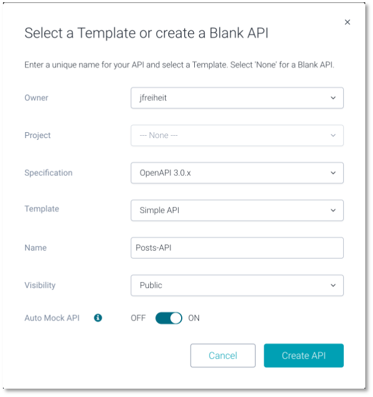
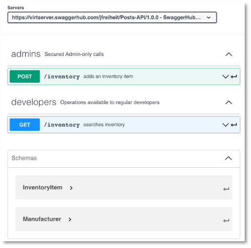
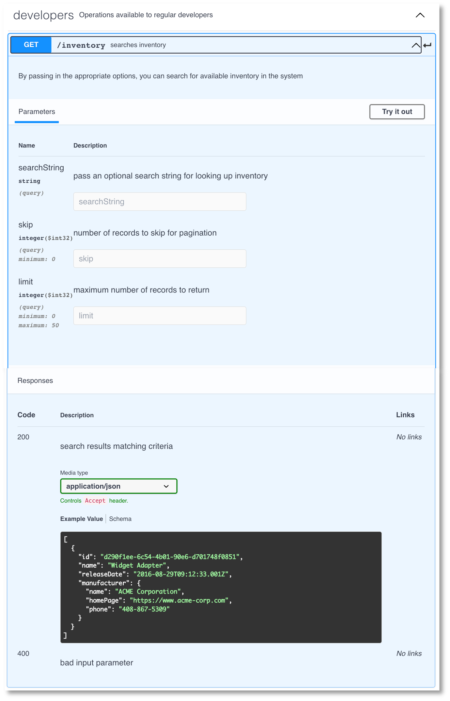
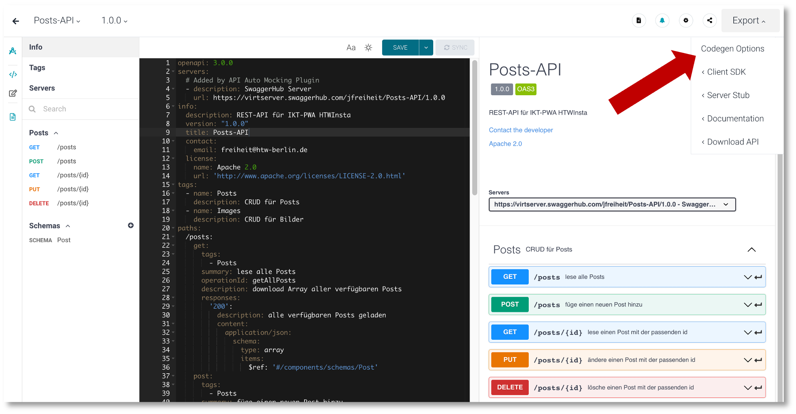
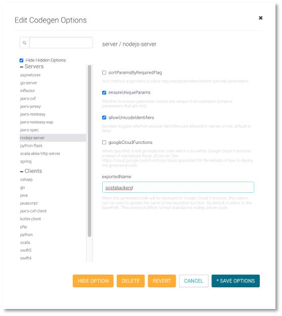

OpenAPI¶
Folgende Endpunkte:
GET /posts(lade alle Posts)GET /posts/:id(lade einen Post mit der entsprechendenid)POST /posts(erstelle einen neuen Post)PUT /posts/:id(ändere den Post mit der entsprechendenid)DELETE /posts/:id( lösche den Post mit der entsprechendenid)
Unser Datenmodell ( Typ Post) soll zunächst so aussehen:
title: String,
location: String,
image_id: String
- öffne https://app.swaggerhub.com/home
- registrieren und einloggen
Create New

Es wird automatisch erstellt:
1 2 3 4 5 6 7 8 9 10 11 12 13 14 15 16 17 18 19 20 21 22 23 24 25 26 27 28 29 30 31 32 33 34 35 36 37 38 39 40 41 42 43 44 45 46 47 48 49 50 51 52 53 54 55 56 57 58 59 60 61 62 63 64 65 66 67 68 69 70 71 72 73 74 75 76 77 78 79 80 81 82 83 84 85 86 87 88 89 90 91 92 93 94 95 96 97 98 99 100 101 102 103 104 105 106 107 108 109 110 111 112 113 114 115 116 117 118 119 | |
Zur Erläuterung:
- Unter dem Schlüssel
paths(Zeile20) ist ein Pfad (eine Route) definiert, nämlich/inventory. Bei diesem Pfad handelt es sich um ein sogenanntes Path Item Object -
Der Pfad
/inventoryenthält zwei sogenannte Operation Objects, nämlichGET(Zeile22) undPOST(Zeile63). Ein Operation Object kann verschiedene Eigenschaften beinhalten:tags: Schlüsselwörter, um die API-Dokumentation zu gruppieren (siehe unten im BildDokumentation der REST-APIdie Gruppenadminsunddevelopers)summary: dient der Erläuterung eines Endpunktes (siehe unten im BildDokumentation der REST-APIdie Erläuterungensearches inventoryundadds an inventory item)description: beschreibt die Funktionalität des Endpunktes detaillierter. Erscheint in der Dokumentation bei den Details eines Endpunktes (siehe unten im BildGet /inventroy-Endpunkt im Detail)responses: beschreibt die Rückgabe des Endpunktes. Es handelt sich um ein Responses Object. Diese können nach HTTP-Statuscodes unterteilt werden. Neben derdescriptionfür den Statuscode kann dabei insbesondere der Typ derresponsesdefiniert werden. In dercontent-Eigenschaft wird zunächst der Typ der akzeptierten Response definiert, z.B.application/jsonoderimage/png. Dann wird spezifiziert, welcher Datentyp zurückgeben wird. Die Zeilen57-60beschrieben bspw., dass ein Array vonInventoryItemszurückgegeben wird. Ein solchesInventoryItemist unter der Eigenschaftschemasdefiniert. Mithilfe von$ref: '#/components/schemas/InventoryItem'wird auf dieses Schema referenziert.- Unter dem Schlüssel
componentskönnenschemas,responses,parameters,examples,requestBodies,headersusw. spezifiziert werden. Mithilfe von$refkann dann auf jede dieser Komponenten referenziert werden. In obigem Beispiel wurde das SchemaInventoryItemund das SchemaManufacturerdefiniert. Diese Schemen entsprechen den verwendeten Datenmodellen.


YAML¶
Die obige Beschreibung ist übrigens in YAML. Ursprünglich stand YAML für Yet Anaother Markup Language. Jetzt sagt die Spezifikation von YAML aber YAML Ain't Markup Language. Es hat Ähnlichkeiten zu JSON, kommt allerdings ohne Klammerung aus. Dafür spielt das Einrücken eine Rolle. OpenAPI unterstützt sowohl JSON als auch YAML.
Die '/posts'-Routen¶
Wir spezifizieren zunächst die /posts-Routen, also GET /posts und POST /posts.
1 2 3 4 5 6 7 8 9 10 11 12 13 14 15 16 17 18 19 20 21 22 23 24 25 26 27 28 29 30 31 32 33 34 35 36 37 38 39 40 41 42 43 44 45 46 47 48 49 50 51 52 53 54 55 56 57 58 59 60 61 62 63 64 65 66 67 68 69 70 71 | |
Die '/posts/{id}'-Routen¶
Nun fügen wir noch die /posts/{id}-Routen hinzu, also GET /posts/{id}, PUT /posts/{id} und DELETE /posts/{id}.
54 55 56 57 58 59 60 61 62 63 64 65 66 67 68 69 70 71 72 73 74 75 76 77 78 79 80 81 82 83 84 85 86 87 88 89 90 91 92 93 94 95 96 97 98 99 100 101 102 103 104 105 106 107 108 109 110 111 112 113 114 115 116 117 118 119 120 121 122 123 124 125 126 127 128 129 130 131 132 | |
Codegenerierung¶

